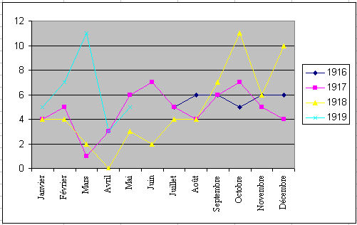
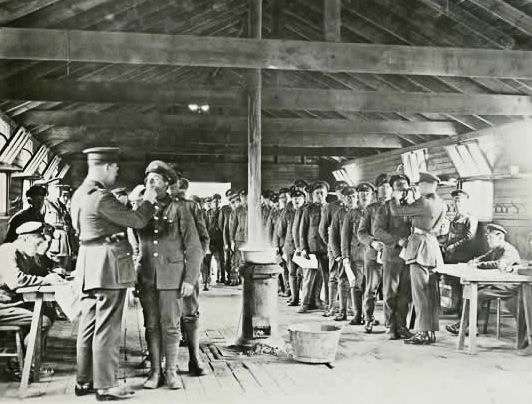
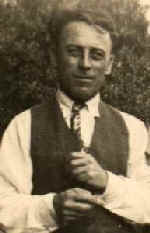

|
JANVIER la
1st Canadian Heavy Battery, l'unité de Charles, passe le mois
de janvier à Bonn. Elle remplit ses corvées usuelles et
ses devoirs d'armée d'occupation.
Quant à Charles, en permission
du 10 au 22 janvier, il va faire un tour en Angleterre.
|
Le journal de guerre de
l'unité d'artillerie de Charles se termine fin janvier
1919.
Les militaires
sont dorénavant tous rattachés au C.A.R.D. (le corps
de réserve canadien), la guerre étant finie.
Pour continuer de suivre
Charles jusqu'à sa démobilisation il ne nous reste, comme
documents, que son dossier personnel et quelques cartes
postales envoyées à sa fiancée. |
En fait, les Canadiens sont des occupants malheureux. Les soldats
désirent retrouver les leurs. Les troupes canadiennes quittent
l'Allemagne pour la Belgique en février 1919, mais il faudra encore
plusieurs mois pour démobiliser tous les soldats encore en Europe.
FÉVRIER
Par une série de trois cartes postales
envoyées à sa fiancée, nous savons que, le
19 février, Charles est pour quelques jours à Namur,
en Belgique, et qu'il
s'y ennuie. Il écrit: " J'espère que
ces cartes vous trouveront en très bonne santé comme je le
suis moi-même. J'espère recevoir bientôt de vos nouvelles qui
sauront diminuer mon cafard parce que je m'ennuie terriblement."
CINQUIÈME
HOSPITALISATION DE CHARLES
Quelques jours plus tard Charles commence
à être grippé. Le 25 février il est hospitalisé avec 102 F.
de fièvre et un fort mal de gorge.
LE 28 FÉVRIER 1919, CHARLES A 26 ANS.
MARS
Le 3 mars il envoie une
carte postale à Ézilda lui mentionnant qu'il est dans un
hôpital en France, et lui demande de ne pas s'inquiéter. En
fait, il est au 32e Stationary Canadian Hospital, à Winereux,
une petite localité près de Boulogne-sur-mer. Il est
officiellement diagnostiqué souffrir d'influenza (la
grippe espagnole).

Évolution de la grippe espagnole ou
grippe A (H1N1) durant la grande guerre.
On y voit qu'il y a eu un pic durant l'hiver 1919, moment où
Charles est malade.
Le 7 mars Charles est transféré par
bateau-hôpital, le H.S. Jan Buydel, en Angleterre. Il est
hospitalisé le lendemain dans le 4e General Canadian Hospital
à Basingstoke, dans le Hampshire, à une cinquantaine de
milles au sud de Londres.
Le jour de l'admission de Charles,
l'hôpital traite 1466 patients. Or, cet hôpital militaire est
en fait le Park Prewett Asylum, (photo
ci-bas) un édifice tout neuf
réquisitionné par le War Office en 1917 et remis aux
autorités canadiennes. Ces derniers l'ont aménagé pour une
capacité de 1040 lits. Mais, en ce mois de mars, le nombre de
patients va jusqu'à 1569. Sans compter le personnel médical
qui est lui aussi infecté par l'influenza.

L'état de santé de Charles s'améliore
lentement. Il est très fatigué suite à plusieurs nuits sans
dormir tant il tousse à s'en faire mal aux côtes. Le médecin
mentionne dans son rapport du 20 mars que Charles semble très
nerveux, il lui a confié "never felt like this before".
On lui fait une prise de sang.
AVRIL
Lors du rapport médical du 5
avril, Charles va mieux, et montre peu de signes de
nervosité. Le 14 avril Charles obtient son
congé de l'hôpital. Il quitte le lendemain, en autobus, pour Ripon, dans le Yorkshire, à deux cents milles au nord de
Londres. Charles y arrive le 18 avril, un vendredi saint. Il
neige durant plusieurs jours. C'est un camp de transit où des milliers
de militaires canadiens attendent leur tour pour être évacués
au Canada. Depuis le début du mois les autorités ont dû
ajouter des tentes tant le camp est surpeuplé.
Ces camps sont de véritables poudrières avec tous ces soldats
désoeuvrés et ne désirant qu'une chose: rentrer au pays, y
trouver du travail et la reconnaissance de leur pays pour tous
leurs sacrifices.
L'évacuation des soldats
se fait
graduellement, selon la disponibilité des ressources.

Le 28 avril Charles passe un examen médical complet, et le 5
mai, un examen dentaire. Tous ces rapports médicaux sont essentiels pour
préparer la démobilisation des soldats.
MAI
Le tour de Charles arrive le
10 mai. Ce jour-là six cent cinquante soldats, dont Charles, sont transférés
au camp Kinmel, à Rhyl. Ce camp est sur la côte ouest,
au pays de Galles. Des émeutes sanglantes y ont eu lieu
quelques semaines plus tôt, et des soldats y ont perdu la vie.
L'affaire a été étouffée par les autorités britanniques, et
les témoins dispersés. (réf: Going Home
(Soldats en transit), un film canadien de Terry Ryan, 1987)
 Charles
s'embarque enfin à Liverpool le 14 mai 1919. Il
débarque à Halifax le 24 mai. Deux jours plus tard il
est à Québec où il est officiellement démobilisé. Il
signe sa "discharge", ce qui coupe tout lien
avec l'armée canadienne. On lui remet son "discharge
certificate" qui lui permettra, pour le reste de sa
vie, de confirmer son statut de vétéran. Charles donne comme
adresse le 74 St-Germain, Québec, soit l'adresse de sa
soeur Crescence qu'il retrouve sûrement avec beaucoup de
plaisir, ainsi que son jeune frère Antoine. Charles
s'embarque enfin à Liverpool le 14 mai 1919. Il
débarque à Halifax le 24 mai. Deux jours plus tard il
est à Québec où il est officiellement démobilisé. Il
signe sa "discharge", ce qui coupe tout lien
avec l'armée canadienne. On lui remet son "discharge
certificate" qui lui permettra, pour le reste de sa
vie, de confirmer son statut de vétéran. Charles donne comme
adresse le 74 St-Germain, Québec, soit l'adresse de sa
soeur Crescence qu'il retrouve sûrement avec beaucoup de
plaisir, ainsi que son jeune frère Antoine.
En 1914, Charles avait quitté
Crescence maman d'un fils de trois ans et enceinte. Il la retrouve
maintenant aussi maman de deux petites filles et, de nouveau enceinte.
Elle donne naissance à un fils le 8 juin suivant. Charles et sa
fiancée Ézilda en sont les parrain et marraine.
 Ensuite
Charles (photo ci-contre)
déménage à Montréal. Il y cherche du travail et prépare son
mariage pour le 28 juillet. Charles retire, par tranches, le
solde de son compte bancaire militaire (un
total de 755$). Il donne
alors comme référence l'adresse d'Ézilda, soit le 580 Bourbonnière.
En fait c'est le logement de sa belle-mère, une veuve qui y vit
avec ses enfants célibataires. Je suppose, qu'après leur mariage, le couple
a vécu quelques années avec la famille d'Ézilda. Ceci parce
qu'on ne trouve aucune trace du couple dans les annuaires Lovell
avant 1925. Une telle cohabitation se
faisait couramment depuis longtemps, et même après la seconde
guerre, faute de ressources pour les jeunes couples.
Pour connaître la
suite de la vie de Charles et Ézilda,
allez sur le site consacré aux Consigny
.

|